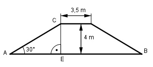

Aufgabe 160 Ein 3,4 km langer Damm, Querschnitt gleichschenkliges Trapez und mit einem Böschungswinkel von 30°, soll so aufgeschüttet werden, dass eine 3,5 m breite Dammkrone und eine Dammhöhe von 4 m entstehen. Wie viel m³ Erde müssen dafür bewegt werden?  Im Dreieck AEC gilt: 4 m tan 30° = ------ |*AE AE AE * tan 30° = 4 m | :tan 30° 4 m 4 m AE = --------- = ---------- = 6,93 m tan 30° 0,57735 AB = 3,5 m + 2 * 6,93 m = 17,36 m 3,4 km = 3 400 m 3,5 m + 17,36 m VDamm = ------------------ * 4 m * 3 400 m = 141 848 m³ 2